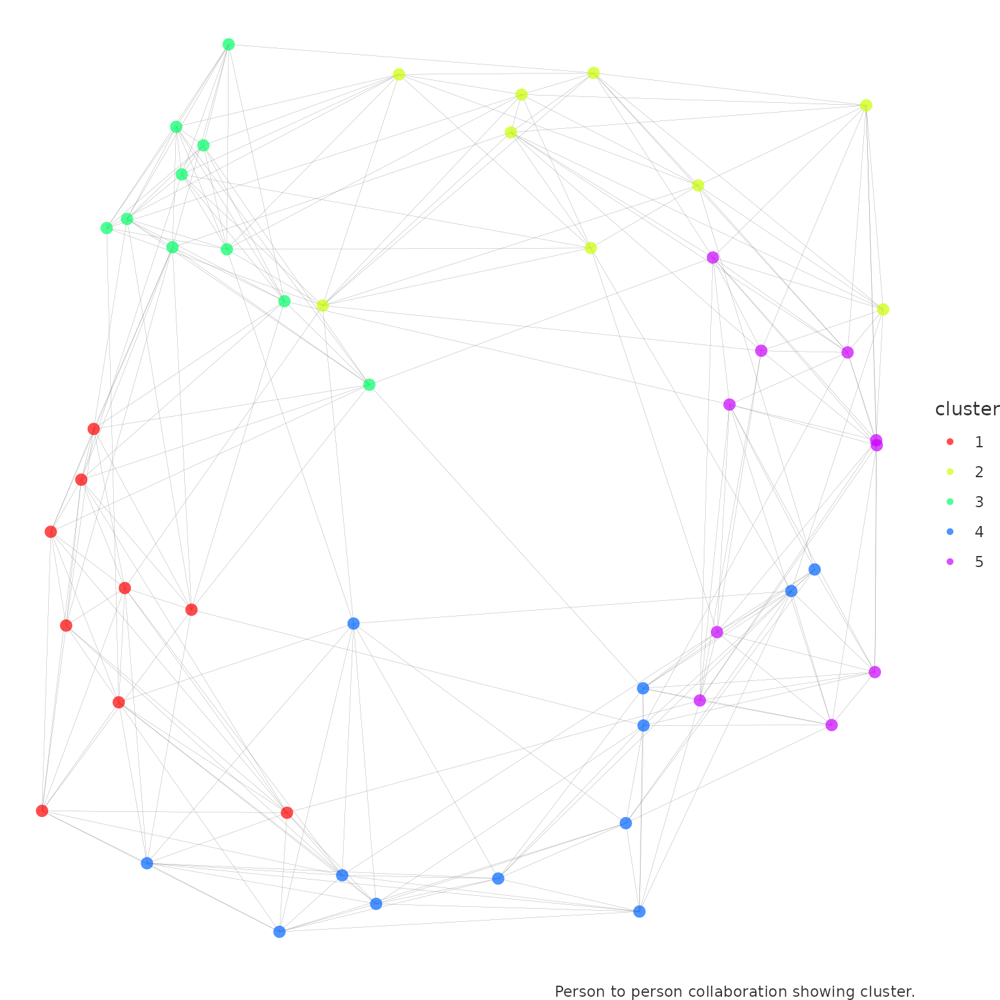

Introduction to Organizational Network Analysis with vivainsights in R
Julia Kasper
Martin Chan
2023-11-02
Source:vignettes/network-analysis.Rmd
network-analysis.RmdThis article provides a beginner’s introduction to Organizational Network Analysis (ONA), its basic concepts, and how to run them with the functions available from the vivainsights R library. We will address the following questions in this article:
- What is Organizational Network Analysis (ONA)?
- What are the basic building blocks of networks?
- What are the scenarios where ONA can be applied?
- What are the functions and outputs available in the vivainsights R library?
This is an updated version of the original article published for the legacy wpa library in 2021 August.
Introduction
Organizational Network Analysis (ONA) is a family of methods to understand patterns of collaboration by examining the strength, frequency and nature of interactions between people. Analyzing and visualizing network connectivity in your organization can help you shape business strategy that unlocks success for individual and team productivity, innovation, employee engagement and organizational change, thereby helping your business become more resilient and effective.
Most valuable information in organizations is not codified. As employees collaborate, information flows from one person to the other or they generate knowledge together. These connections deliver value when information is exchanged and visualizing these relationships can provide us with a holistic view of how information flows through an organization. ONA can help us reveal central network collaborators, critical connections, and potential barriers to information flow.
Basic Building Blocks
We will start with the basic building blocks of networks. Networks
consist of two primary aspects, a multitude of separate entities
(“nodes”) and the connections between them (“edges”). Nodes and edges
provide a foundation for understanding how information flows in your
organization, and also strategizing on how they can flow and should
flow. Nodes in ONA visualizations typically represent individual
employees or groups of employees (e.g. Organization,
Region etc.), serving as important hubs for the exchange of
ideas and information. In addition to these nodes, you have connections
between them called edges. These edges represent a
connection between nodes, which in turn represents a collaboration
relationship between individuals or groups. In the context of Viva
Insights, these connections between nodes in the network represent
collaboration activities (emails, meetings, calls, instant messages). In
a network analysis, we also need to understand the strength of the tie.
For this calculation we are using time spent together in collaboration.
In addition, we have to consider the direction in which
collaboration is operated. For meetings there is no direction, but for
emails, chats and calls we have a sense of direction which we can look
at.
Viva Insights provides a powerful data source for performing network analysis and for surfacing insights about information flows in your organization. The vivainsights R library contains several powerful features that enables you to create such analysis and visualizations.
Scenarios
Network analysis provides a data-driven approach to address organizational challenges. Practical scenarios include:
- Identifying silos: ONA can help reveal critical silos where collaboration improvements can be generated. By tapping into this data, organizations can rebalance collaboration loads, expand capacity, and integrate expertise on the edge of the network to break down those silos.
- Identifying influencers: By understanding the depth and intensity of collaboration, organizations can identify influencers. To boost employee engagement and prevent potential attrition, they can reduce collaborative overload on those central collaborators in the network and better leverage top talent.
- Workspace planning: ONA can surface the ‘organic’ patterns of how individuals and groups collaborate with each other, and help decision-makers determine how workspaces and seating should be allocated as organizations move back to the office.
- Improve organizational culture: Through insights into where information flows efficiently and flags where it flows inefficiently, this approach offers a great opportunity to reduce effort and improve value creation. With this information, key work activities can be enhanced, innovation can be driven, and network behaviour can be aligned to organizational strategies.
Functions and Metrics
Network analysis is quantitative and uses collaboration data to create a matrix of relationships and applies matrix algebra to calculate measures. The vivainsights R package provides a set of functions that are designed to run these analyses and visualizations with the data from Viva Insights. Specifically, the data refers to two cross-collaboration queries, the Group-to-group query and the Person-to-person query.
- Group-to-group query: captures collaboration between two groups in your organisation. For example, how often employees in design collaborate with US-based employees.
- Person-to-person query: captures collaboration between individuals in your organisation. For example, how strongly managers in engineering are connected to managers in design.
The corresponding functions from the package are as follows:
network_g2g(): an advanced function which manipulates a group-to-group collaboration graph. It creates a network plot with the group-to-group query and displays collaboration across your organization. The default metric value isGroup_collaboration_time_invested, but this can be customized by supplying the name of the metric.network_p2p(): this function analyses a person-to-person (P2P) network query, with multiple visualisation and analysis output options (e.g. sankey plot, network plot). This function enables you to perform community detection as well as compute centrality statistics on the P2P network. > Strong and diverse tie metrics are based on collaboration activities and indicates how varied, broad and strong a person’s connections or engagements are. See more from here.
Queries and Outputs
The functions from the vivainsights library operate
on top of queries generated from the Viva Insights Analyst experience.
These queries are first generated, exported as CSV, and loaded into R as
data.frame objects. These data frames are then passed into
the functions as input parameters.
Another parameter that can be specified is the return
parameter, which for instance controls whether the function would return
a table (return = "table") or a plot
(return = "plot").
Group-to-group
Here is an example of the network_g2g() function run on
the g2g_data data frame, with the return
parameter set to "plot".
network_g2g(data = g2g_data, return = "plot")
- You can specify the metric being used for this visualization (Default: metric = “Group_collaboration_time_invested”)
- Optionally you can provide a data frame that displays the size of each organization in the collaborator attribute. More information find here.
Interpretation: This visualization shows how strongly different organizations are connected. Each node represents a group in an organization, and the width of the edges represent the proportion of collaboration that occurs between the two groups. Note that an exclusion threshold is applied here, so that only collaboration proportions (edge widths) above a specified percentage are shown. Groups or nodes that do not have any edges connected to them (‘islands’) may have a possible risk of being siloed because they are not as strongly connected to other groups.
To display all the edges without setting an exclusion threshold, you can run:
network_g2g(data = g2g_data, exc_threshold = 0, return = "plot")
To better understand the data, you can also run the following code to return a table of the data:
To validate hypotheses and better understand the data, it is also recommended that you run the following code to examine the interaction matrix. The interaction matrix is a matrix that captures the aggregated collaboration between all groups against each other, in the scope of the generated query.
network_g2g(data = g2g_data, exc_threshold = 0, return = "table")
#> # A tibble: 5 × 7
#> PrimaryOrg Finance HR Product `Sales and Marketing` CEO
#> <chr> <dbl> <dbl> <dbl> <dbl> <dbl>
#> 1 CEO 0.210 0.247 0.236 0.307 NA
#> 2 Finance 0.570 0.152 0.142 0.133 0.00278
#> 3 HR 0.143 0.584 0.141 0.129 0.00308
#> 4 Product 0.132 0.137 0.582 0.146 0.00320
#> 5 Sales and Marketing 0.132 0.130 0.158 0.576 0.00385
#> # ℹ 1 more variable: `Unclassified Collaborators` <dbl>Person-to-person
Running the network visualization for the Person-to-person query is
similar. In the code below, we start off by generating a
person-to-person data frame using the p2p_data_sim()
function. This function generates a simulated data frame that is
compatible with the network_p2p() function. Next, we run
the network_p2p() function and specify the
return parameter to be "plot".
p2p_data <- p2p_data_sim(size = 50)
p2p_data %>% network_p2p(hrvar = 'Organization', return = "plot")
Each node represents an individual, and the colour of the nodes
correspond to the HR attribute specified in the arguments
(‘Organization’). An edge represents there being a reciprocal
interaction between two individuals. By default, multi-dimensionality
scaling (layout = 'mds') is used for determining the layout
of the network.
Centrality
One additional functionality of network_p2p() is the
ability to generate centrality statistics. Centrality statistics are a
set of metrics that are used to identify the most important nodes in a
network. The following code generates a centrality table, which is a
table of centrality statistics for each node in the network.
tb_centrality <- p2p_data %>%
network_p2p(
hrvar = 'Organization',
centrality = 'degree',
return = "data"
)
head(tb_centrality)
#> # A tibble: 6 × 7
#> name Organization betweenness closeness degree eigenvector pagerank
#> <chr> <chr> <dbl> <dbl> <dbl> <dbl> <dbl>
#> 1 SIM_ID_1 Org F 0 0.345 10 0.781 0.00456
#> 2 SIM_ID_2 Org F 0 0.421 10 0.809 0.00456
#> 3 SIM_ID_3 Org E 3.06 0.346 10 0.825 0.00534
#> 4 SIM_ID_4 Org D 3.22 0.338 10 0.841 0.00591
#> 5 SIM_ID_5 Org C 39.5 0.398 11 0.938 0.00662
#> 6 SIM_ID_6 Org B 36.6 0.383 12 1 0.00743It is also possible to run the above, averaged by an attribute
specified with the hrvar argument:
p2p_data %>% network_p2p(hrvar = 'Organization', centrality = 'degree', return = "table")
#> # A tibble: 6 × 7
#> Organization n betweenness closeness degree eigenvector pagerank
#> <chr> <int> <dbl> <dbl> <dbl> <dbl> <dbl>
#> 1 Org A 7 42.4 0.563 10.1 0.720 0.0217
#> 2 Org B 7 41.3 0.515 10.4 0.741 0.0189
#> 3 Org C 8 31.8 0.486 9.5 0.712 0.0243
#> 4 Org D 5 36.8 0.496 10.2 0.765 0.0163
#> 5 Org E 5 34.0 0.461 10 0.719 0.0155
#> 6 Org F 18 32.3 0.512 9.94 0.691 0.0201The definition of the centrality metrics are as follows:
- betweenness: number of shortest paths going through a node.
- closeness: number of steps required to access every other node from a given node.
- degree: number of connections linked to a node.
- eigenvector: a measure of the influence a node has on a network.
- pagerank: calculates the PageRank for the specified vertices. Please refer to the igraph package documentation for the detailed technical definition.
Communities
In the context of ONA, community detection refers to the process of identifying groups of nodes (in this case, individuals within an organization) that are more densely connected with each other than with the rest of the network. These groups, or communities, often reveal substructures within the organization, such as informal groups or teams that collaborate across department, job roles, or geographical boundaries.
Community detection can provide valuable insights into the structure and dynamics of an organization. For example, it can help identify silos within the organization, where information or resources might not be flowing efficiently. It can also help identify key individuals who serve as bridges between different communities, who could be leveraged to improve communication and collaboration across the organization.
You can use the community and the comm_args
argument in network_p2p() to perform community detection.
Here is an example where we also specify the function to use the
“ggraph” style:
network_p2p(
data = p2p_data,
community = "leiden",
style = "ggraph",
comm_args = list("resolution" = 0.1)
)Here, we are using the Leiden algorithm
to detect communities. The resolution parameter is a tuning
parameter that controls the size of the communities. A higher value of
resolution will result in smaller (and more) communities.
network_p2p() operates on top of the community detection
algorithms offered by igraph
package, with the following algorithms supported:
-
leiden (
igraph::cluster_leiden()): Leiden algorithm of Traag, van Eck, & Waltman -
walktrap (
igraph::cluster_walktrap()): Walktrap community finding algorithm using short random walks, of Pons and Latapy -
fast_greedy
(
igraph::cluster_fast_greedy()): Fast greedy modularity optimization, of Clauset, Newman, & Moore -
edge_betweenness
(
igraph::cluster_edge_betweenness()): Edge betweenness community finding algorithm, of Girvan & Newman -
infomap (
igraph::cluster_infomap()): Infomap community finding algorithm, of Rosvall & Bergstrom -
label_prop
(
igraph::cluster_label_prop()): Label propagation community finding algorithm, of Raghavan, Albert, & Kumara -
leading_eigen
(
igraph::cluster_leading_eigen()): Leading eigenvector community finding algorithm, of Newman -
multilevel
(
igraph::cluster_multilevel()): Multilevel community finding algorithm, of Blondel et al. -
spinglass
(
igraph::cluster_spinglass()): Spinglass community finding algorithm, of Reichardt & Bornholdt
Here is another example of how to use a different community detection algorithm:
network_p2p(
data = p2p_data,
style = "ggraph",
community = "fluid_communities",
comm_args = list("no.of.communities" = 5)
)
Please see the original igraph
documentation for more details on the community detection parameters
to pass into comm_args.
You can also choose to visualize and explore the communities using
other options available in return. For instance, you can
return a sankey visual:
network_p2p(
data = p2p_data,
community = "leiden",
return = "sankey",
comm_args = list("resolution" = 0.1)
)Or a table of the communities, and how they group together with the
HR attribute specified in hrvar:
network_p2p(
data = p2p_data,
community = "leiden",
return = "table",
comm_args = list("resolution" = 0.1)
)
#> # A tibble: 18 × 3
#> Organization cluster n
#> <chr> <chr> <int>
#> 1 Org A 1 2
#> 2 Org A 2 3
#> 3 Org A 3 2
#> 4 Org B 1 2
#> 5 Org B 2 2
#> 6 Org B 3 3
#> 7 Org C 1 3
#> 8 Org C 2 3
#> 9 Org C 3 2
#> 10 Org D 1 2
#> 11 Org D 2 1
#> 12 Org D 3 2
#> 13 Org E 1 2
#> 14 Org E 2 1
#> 15 Org E 3 2
#> 16 Org F 1 3
#> 17 Org F 2 7
#> 18 Org F 3 8Analysis Approach
The best practice towards network analysis is always to first establish and validate hypotheses with the data, and then visualize the result. The reason why one should not start an analysis by interpreting a network visual is that network visualizations are critically affected by inputs such as layout algorithms (of which many are non-deterministic), inputs to those layout algorithms, and visual elements such as the colours and transparencies of the nodes and edges.
The above point on best practice is particularly pertinent for person-to-person analyses, which typically involve a large number of nodes and misleading conclusions can be drawn if one is not fully aware of the input parameters that have been used in generating the visual. In this case, the recommend interpretative approach would be to:
Run the summary tables or graph statistics by returning
'table'or'network', making use of graph analysis functions that are compatible with an'igraph'object.Develop a series of hypotheses based on your knowledge of the organization and the data you are seeing. For instance, the hypothesis could be that Team A and Team B have very few ties with each other, but Region C maintain very strong ties with both of those regions, making it potentially a less optimal solution to allocate Team A and B together on ‘office day’ rotations. The same principle applies when generating communities.
-
Validate hypothesis with the data, using multiple permutations. For instance, the selected date range and population could lead to a different outcome in the data.
Iterate with input parameters to create the visual that is most appropriate for communicating your analysis.
End Note & Reference
This article is a first introduction to the topic of Organizational Network Analysis but there is more to come. At this point you should know the basic building blocks of network analysis and how to run the relevant functions in the vivainsights R library. Here are some more references on how to use the vivainsights R package and the topic of networks: